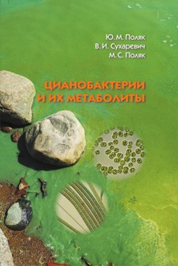

|  |
Поляк Ю.М., Сухаревич В.И., Поляк М.С. П54 Цианобактерии и их метаболиты. — СПб. : Нестор-История, 2022. — 328 с.
ISBN 978-5-4469-1975-8
Рецензент: доктор биологических наук А. Н. Шаров
Книга посвящена цианобактериям, древнейшим обитателям нашей планеты. Отличаясь особой жизнестойкостью, они существуют во всех регионах Земли при самых разных климатических условиях. Цианобактерии играют значительную роль в экологии биосферы, морей, океанов, иных водоемов, в сельскохозяйственной экологии, в геоэкологии и др. В книге обобщены материалы о строениии метаболизме цианобактерий, их систематике и методах идентификации. Дана характеристика цианотоксинов и процессов их образования, их распространения в природных экосистемах, их роли в патологии человека и животных. Рассмотрены клинические данные острых и хронических заболеваний, вызванных токсичными метаболитами цианобактерий. Особое внимание уделено образованию цианобактериями метаболитов, которые могут быть использованы в народном хозяйстве, для фармацевтических целей, как продукты питания человека и животных, в целях биоремедиации. Рассмотрены условия, которые способствуют развитию цианобактерий в водной среде и почвах, особенности воздействия их интенсивного размножения на окружающую среду. Приведены методы регуляции их развития, способы очистки воды как от самих цианобактерий, так и от их метаболитов. В книге подчеркивается ограниченность существующих представлений о цианобактериях и их метаболитах. Формулируются те направления исследований, результаты которых способствовали бы положительному влиянию цианобактерий на окружающую среду, применению их метаболитов в различных областях, в том числе для целей здравоохранения. Книга рассчитана на экологов и специалистов иных дисциплин, интересующихся цианобактериями.
|